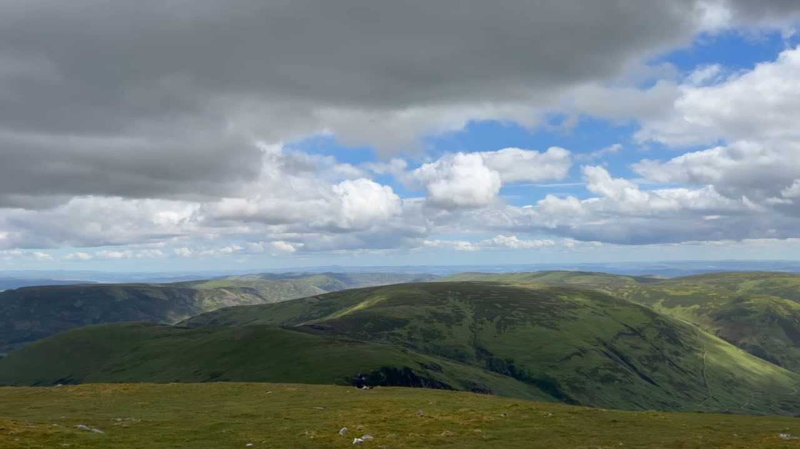
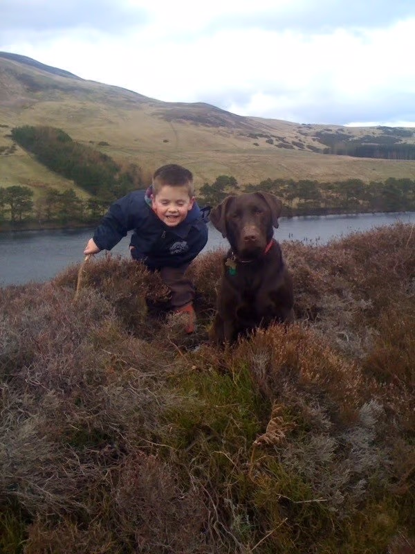
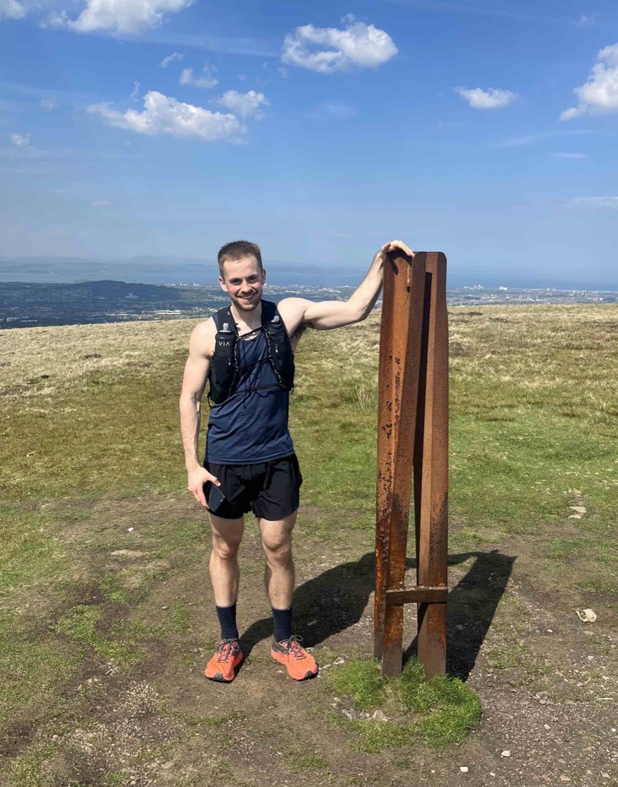
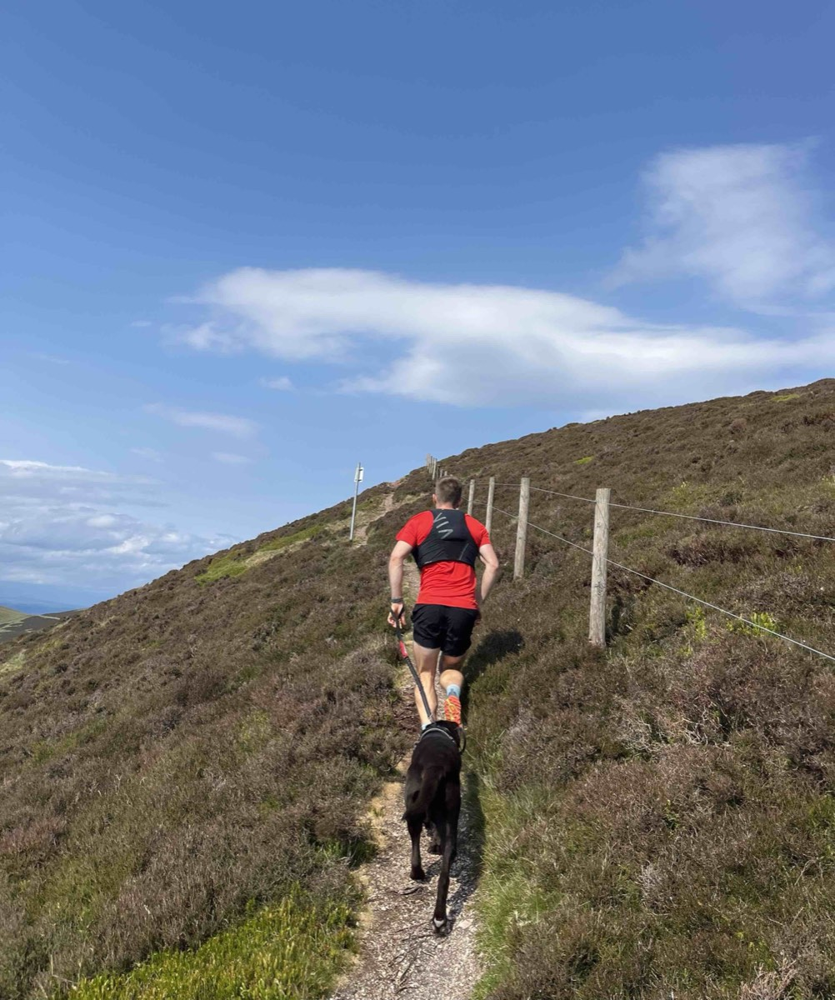
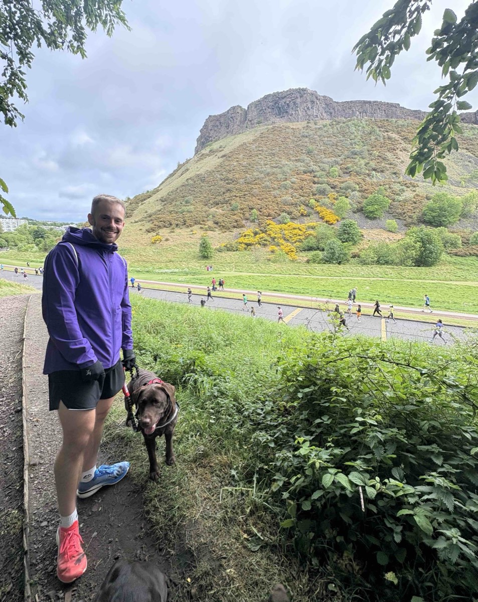
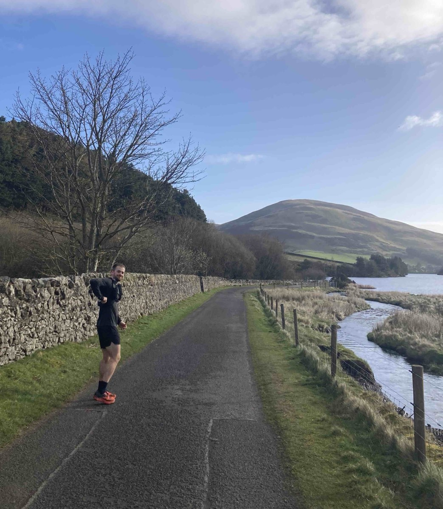
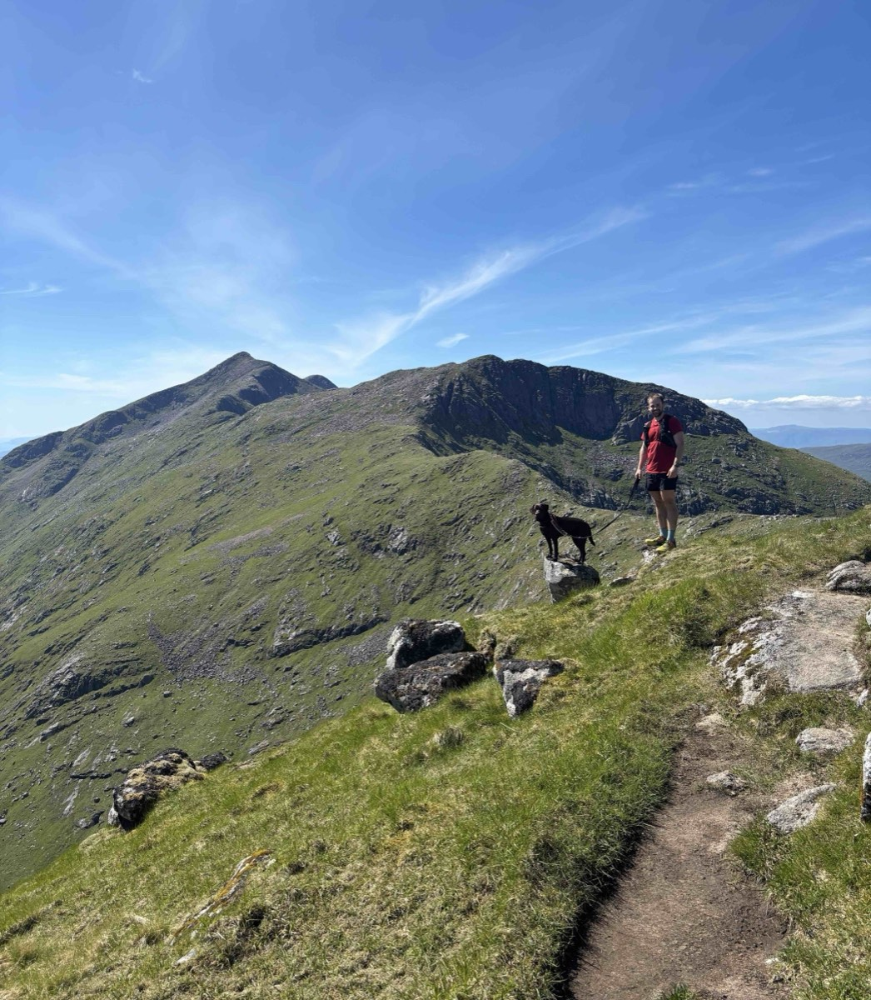
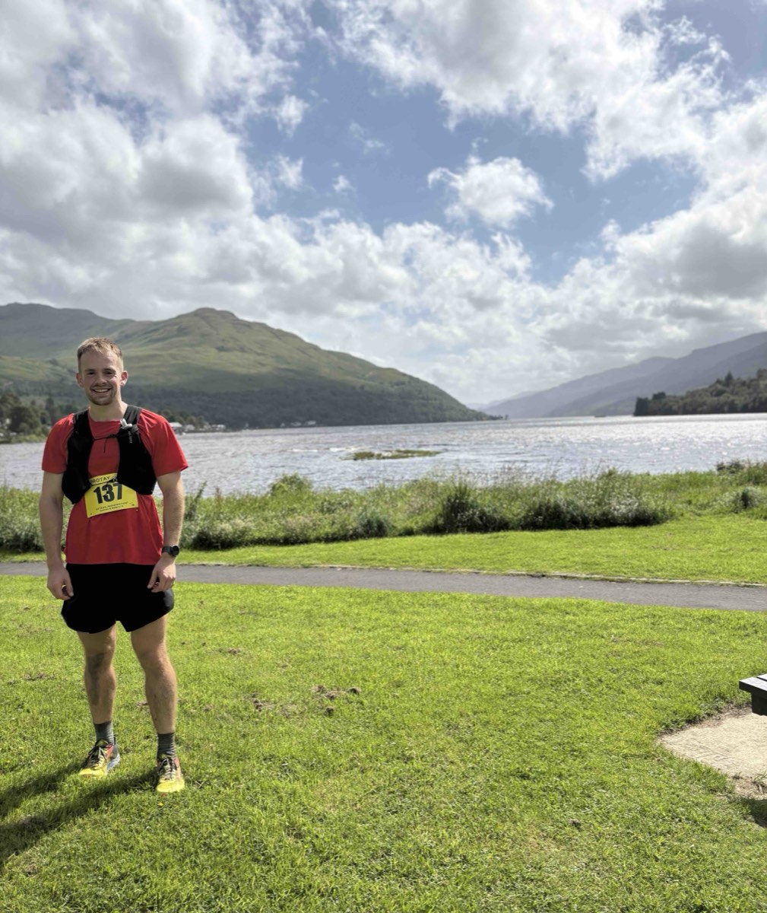
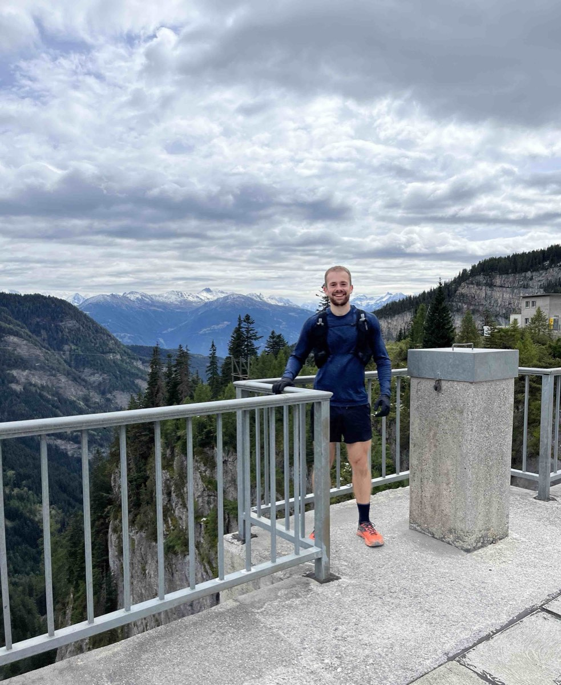

579 m
579 m
The Pentland Hills
Open ridge walking over Caerketton, Allermuir and on to Scald Law, with the reservoirs below and the whole city laid out behind you.
- Grade Moderate
- Duration Half or full day
- From Edinburgh
Private tours on the Pentland Hills and Edinburgh's seven hills, with a guide who knew them before he could walk them.
Filmed: Videos by Sebastian C N Anderson of the Pentlands & Edinburgh Hills. Copyright 2026.
All tours are done privately, either 1-1 or in small groups organised by the booker, so there will be no strangers and you can walk at your own pace.
Sebastian grew up in Edinburgh and has spent over twenty years on these hills. He knows them very well.
From short, flat routes to a full day across several summits. Every tour is built around the people on it.

This is the whole case for walking in Edinburgh. Most cities put their hills a day's drive away. Here the ground rises straight out of the streets — an extinct volcano at two kilometres, real mountain country by nine.
Scroll the section to follow the ground out of the city
579 m
Open ridge walking over Caerketton, Allermuir and on to Scald Law, with the reservoirs below and the whole city laid out behind you.
 164 m
164 m
A wooded burn, a local nature reserve and a short pull onto Blackford Hill — the gentlest of the three, and the best view of the castle in the city.
 251 m
251 m
An extinct volcano in the middle of the city. Every possible path, the quiet ones included, finishing on the summit for the view that sells Edinburgh.
Stevenson grew up under these hills and called them, from the other side of the world, the hills of home.The Pentlands · Robert Louis Stevenson, 1850–1894
I've been walking these hills since I was very young, and I still get out on them most weeks — usually a mixture of trail runs and long walks with my two chocolate Labradors, Daisy and Poppy.
My first proper adventure was the Pentlands, over twenty years ago. Since then I've explored almost every corner of them: the reservoirs at Bonaly and Threipmuir, the steeper routes up Caerketton, and the long ridge over the Kips to Scald Law.
Outside Edinburgh I walk, run and climb in the Highlands and abroad — a number of trail races, the Arrochar Alps, and a UTMB in Switzerland. But it's these hills I most enjoy showing people around.








Sebastian picked a route that suited the four of us rather than the other way round, and changed it on the day when the cloud came in. We saw more of the Pentlands in an afternoon than we had in years of living here.
I was worried about holding everyone up. He set the pace around me from the first ten minutes and never once made it feel like a problem. I have booked again for the autumn.
We had one afternoon free in Edinburgh and did not want the usual tourist route. Arthur's Seat by the quiet paths, with someone who knew the geology and the history, was the best part of our trip.
These three are the most popular, but I run custom routes across the Pentlands and all seven hills. Tell me what you're after.
Get in touch →